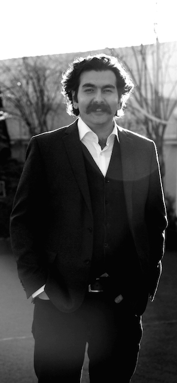

(last update: March 04, 2020)

I am a CNRS postdoctoral researcher based in Paris. I am a member of the LINGUAE research group, which is part of Institut Jean-Nicod, which is part of Département d'Études Cognitives at École Normale Supérieure, which is itself part of Université PSL. My work is funded by the project Sources of Meaning (European Research Council, PI: Philippe Schlenker).
I defended my dissertation, entitled Meaning in Context, in December 2019 under the supervision of Philippe Schlenker and Benjamin Spector.
I work on formal semantics and pragmatics, often on the basis of data from Farsi. I am particularly interested in various aspects of context-dependency, alternative-based reasoning, syntax-semantics interface, and the interpretation of co-speech gestures.
My partner, Leila Mirzagholi, is a PhD candidate at the Max Planck Institute for Astrophysics in Munich. To her, I look like this.
You can download my CV from here.
* Authors are listed alphabetically unless otherwise indicated.
* Papers can also be accessed on LingBuzz, Semantics Archive, and Google Scholar.
Institut Jean-Nicod
UMR 8129
Pavillon Jardin
École Normale Supérieure
29, rue d’Ulm
F-75005 Paris, France
{kind=link}